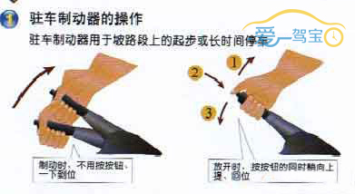

驻车制动器操纵杆是能使汽车本体固定在地面或某平面上而不出现相对移动的总成的操纵装置。是汽车驻车制动器总成的一部分。也称“手制动”、“手刹”、“中央制动器”。
操作步骤
1 拉紧时，右手五指握住手制动拉杆用力向上拉紧,此时仪表盘驻车制动警告灯亮。
2 放松时，右手五指握住手制动拉杆先向上用力提起后，用拇指压下制动拉杆顶端的按钮，再将制动拉杆放松至底部。此时，驻车制动解除，驻车制动警告灯熄灭。

3 如果道路狭窄靠右开，以右边马路牙子为参考，在狭窄路段驶偏，极容易与对向车辆发生碰撞。
 爱驾宝温馨提示
爱驾宝温馨提示